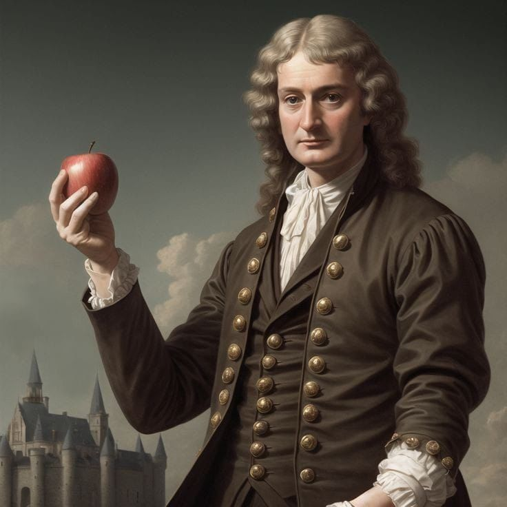

1
Penemuan Hukum Gravitasi Universal
Salah satu kisah paling terkenal dari Isaac Newton adalah tentang apel yang jatuh dari pohon. Cerita ini bukan sekadar dongeng — konon, saat Newton duduk di bawah pohon dan melihat sebuah apel jatuh, ia mulai bertanya-tanya: mengapa apel itu jatuh lurus ke bawah dan tidak ke samping atau ke atas? Pertanyaan sederhana itu membawanya pada pemikiran mendalam tentang gaya tarik-menarik antara benda-benda.
Dari pemikiran itu, Newton merumuskan hukum gravitasi universal, yaitu:
“Setiap benda di alam semesta menarik benda lain dengan gaya yang besarnya sebanding dengan hasil kali massa kedua benda dan berbanding terbalik dengan kuadrat jarak antara keduanya.”
Artinya
Semakin besar massa suatu benda, semakin besar gaya gravitasinya. Semakin jauh jaraknya, semakin kecil gaya tariknya.
Penemuan ini sangat penting karena mengubah cara manusia memahami alam semesta. Sebelumnya, orang mengira bahwa hukum-hukum yang berlaku di bumi tidak sama dengan hukum-hukum di langit. Tapi Newton membuktikan bahwa hukum yang sama berlaku di mana pun, baik untuk apel yang jatuh, planet yang mengorbit matahari, maupun bulan yang mengelilingi bumi.
2
Penemuan Tiga Hukum Gerak Newton

Selain hukum gravitasi, Newton juga menemukan tiga hukum gerak, yang menjadi dasar bagi ilmu fisika modern. Hukum-hukum ini ia tulis dalam bukunya yang terkenal, Philosophiæ Naturalis Principia Mathematica (atau sering disebut Principia), yang terbit pada tahun 1687.
Hukum Inersia
“Sebuah benda akan tetap dalam keadaan diam atau bergerak lurus beraturan kecuali ada gaya luar yang mengubahnya.”
Contoh: Kalau kamu menendang bola di lapangan, bola itu akan terus meluncur... tapi lama-lama berhenti karena ada gaya gesekan dan udara. Jika tidak ada gaya itu, bola akan terus melaju selamanya!
F = m x a
“Percepatan suatu benda sebanding dengan gaya yang diberikan padanya, dan berbanding terbalik dengan massanya.”
Contoh: Semakin kuat kamu mendorong sepeda, makin cepat ia bergerak. Tapi kalau sepedanya sangat berat, perlu gaya lebih besar untuk mempercepatnya.
Aksi Dan Reaksi
“Setiap aksi akan menghasilkan reaksi yang sama besar dan berlawanan arah.”
Contoh: Saat kamu melompat dari perahu, perahu akan terdorong ke belakang. Gaya lompatmu ke depan (aksi) menyebabkan perahu terdorong ke belakang (reaksi).
Ketiga hukum ini sangat penting dalam dunia modern, mulai dari teknik kendaraan, pembangunan gedung, olahraga, hingga peluncuran roket ke luar angkasa.
3
Penemuan Kalkulus
Selain sebagai fisikawan, Newton juga seorang matematikawan luar biasa. Salah satu kontribusinya yang sangat penting adalah penemuan kalkulus — cabang matematika yang digunakan untuk mempelajari perubahan, seperti kecepatan, pertumbuhan, atau luas bentuk yang tidak beraturan.
Meskipun pada saat yang hampir bersamaan, ilmuwan asal Jerman bernama Gottfried Wilhelm Leibniz juga menemukan kalkulus secara terpisah, Newton dianggap sebagai salah satu penemu utama kalkulus.
📊 Apa itu kalkulus?
Kalkulus terdiri dari dua bagian utama:
Kalkulus diferensial: digunakan untuk menghitung laju perubahan (misalnya kecepatan mobil pada waktu tertentu).
Kalkulus integral: digunakan untuk menghitung total atau luas sesuatu (misalnya luas daerah di bawah kurva).🔬 Dampaknya:
Tanpa kalkulus, kita tidak bisa: Menganalisis gerak planet secara akurat Mendesain mesin dan bangunan modern Membuat simulasi komputer, grafik 3D, dan teknologi canggih lainnya.
Kalkulus menjadi dasar dalam berbagai ilmu, termasuk fisika, teknik, ekonomi, biologi, dan komputer.
🧠Kesimpulan
Isaac Newton adalah salah satu tokoh ilmiah paling berpengaruh dalam sejarah. Tiga penemuan utamanya hukum gravitasi universal, tiga hukum gerak, dan kalkulus mengubah cara manusia memahami alam semesta. Berkat pemikirannya, revolusi ilmiah terus berkembang, dan dunia modern bisa berdiri di atas dasar-dasar ilmiah yang kokoh.